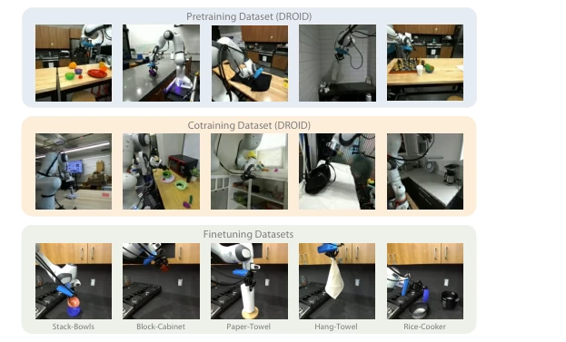
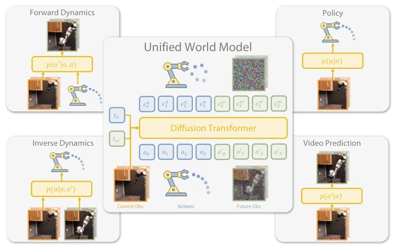
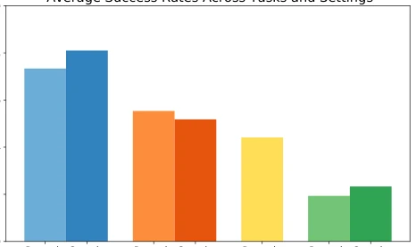
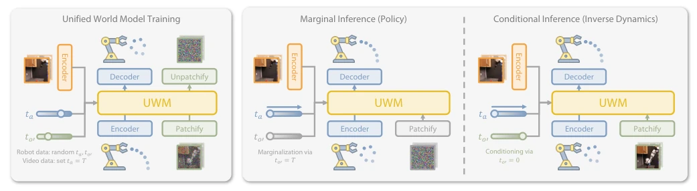
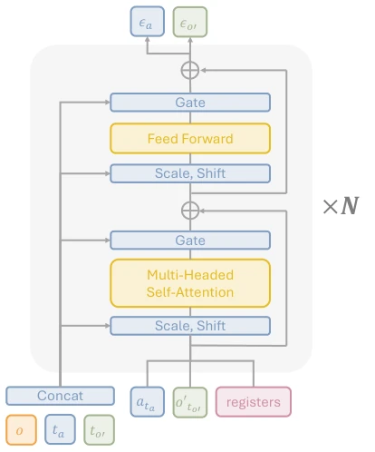
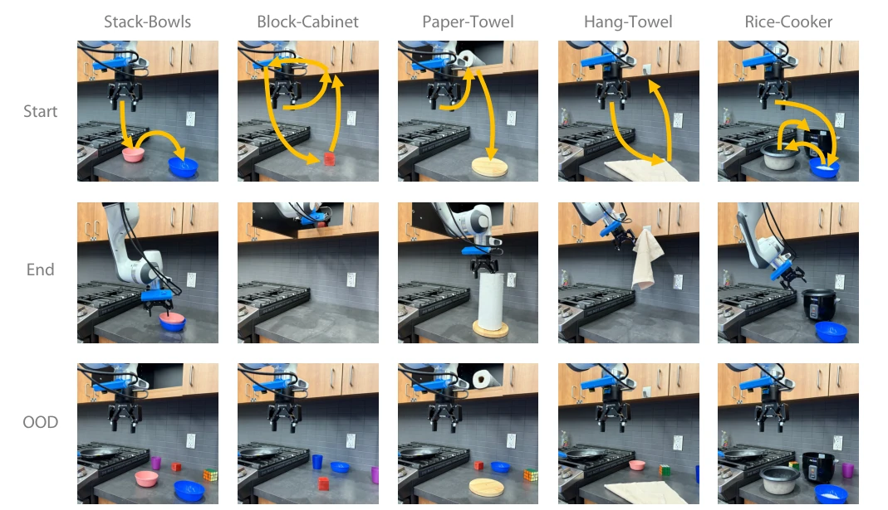
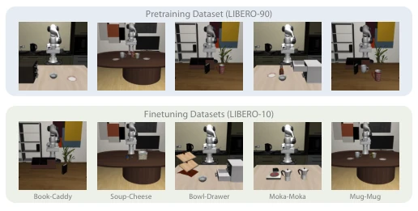
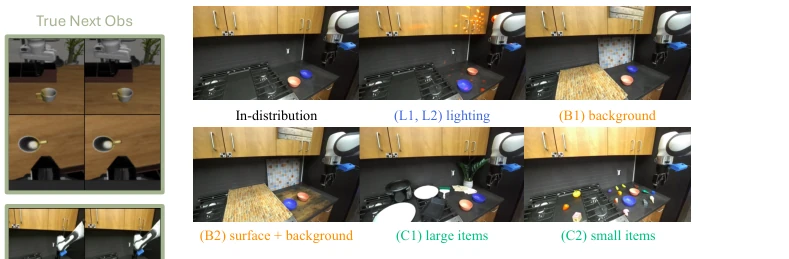
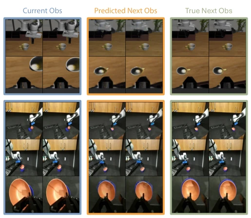
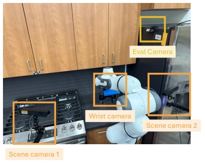

This paper attempts to stitch imitation learning and world modeling together using a "Unified World Model" (UWM), which sounds grand. The core strategy is actually coupling actions and video diffusion within a Transformer, switching functions by controlling their respective timesteps. This approach is indeed clever, serving as both a Policy and a Dynamics model, while also leveraging actionless video data. Experimentally, it outperforms Diffusion Policy and GR1 on both real robots and LIBERO simulations, particularly showing good robustness in out-of-distribution (OOD) scenarios. However, do not be fooled by the word "Unified"; essentially it remains a diffusion-based generative policy, forward dynamics reconstruction still has artifacts, and there is still a gap from truly utilizing internet human videos (embodiment gap). It serves as providing a more flexible base for large-scale robot pre-training, but is still far from general-purpose robots.
Imitation Learning (IL) is a popular path for building general-purpose robots, but it heavily relies on high-quality expert demonstration data, with high scaling costs and data scarcity [11]. Although there is a massive amount of video data on the internet, it lacks action annotations, making direct use for imitation learning difficult. Existing World Models can capture dynamics, but how to convert them into robust controllers remains unclear [13]. Furthermore, traditional methods often separate policy learning and dynamics modeling, unable to share features. This paper aims to address how to utilize large-scale heterogeneous data (including action and actionless videos) for pre-training, improve the generalization and robustness of policies, and bridge the gap between imitation learning and world modeling.

Fig. 4. Visualization of datasets used for pretraining and finetuning. The pretraining and cotraining dataset consists of diverse tasks performed by Franka robots in various environments to ensure broad generalization capabilities. The finetuning datasets include five tasks, each designed to evaluate task-specific performance under controlled conditions.
The core of UWM is a coupled action-video diffusion Transformer. In the overall process, the model receives current observation $o$, and noisy action $a_t$ and next frame observation $o'_{t'}$ respectively, predicting noise through a shared Transformer backbone. The innovation lies in decoupling the diffusion timesteps $t_a$ and $t_{o'}$ for actions and observations. During training, $t_a, t_{o'}$ are randomly sampled for robot data, while for actionless video data $t_a=T$ is fixed (equivalent to masking actions). During inference, different functions are achieved by fixing timesteps: when $t_{o'}=T$, marginalizing observations yields policy $p(a|o)$; when $t_a=0$, conditioning on actions yields forward dynamics $p(o'|o,a)$. Architecturally, ResNet encodes images, SDXL VAE encodes latent space, and Register tokens are introduced to facilitate information exchange between modalities. This design allows a single model to flexibly switch roles of policy, dynamics prediction, and video generation, achieving feature sharing and causal understanding.

Fig. 1. Unified World Models integrates action and video diffusion in a unified transformer architecture controlled by modality-specific diffusion timesteps. The model can be trained on large robotics datasets and then flexibly perform a variety of different inferences at test time. This enables improved robustness and generalization for imitation learning.
Experiments are conducted on Franka real robots (DROID dataset) and LIBERO simulation benchmarks. Comparison baselines include Diffusion Policy (DP), PAD, and GR1. Evaluation metrics are task success rates, covering in-distribution (ID) and out-of-distribution (OOD) scenarios. Results show UWM has the highest success rate in real tasks, with OOD robustness significantly better than DP. Performance improves further after adding actionless video co-training. Ablation studies verify accurate forward dynamics prediction, and independent timestep design outperforms shared timesteps (such as PAD). In LIBERO simulations, UWM also achieves the highest average success rate, proving the effectiveness of learning dynamic information from large-scale multi-task data.

Fig. 6. Average success rates across all real robot tasks and in-distribution and out-of-distribution settings. UWM exhibits strong performance and can further improve by co-training from action-free videos.
其他图片Other Figures

Fig. 2. Unified World Model training and inference pipeline. The left panel shows UWM pretraining on robot trajectories with actions and co-training on action-free videos by masking out actions using diffusion timesteps. The right panel illustrates marginal and conditional inference modes, corresponding to the policy and the inverse dynamics.

Fig. 3. A single Unified World Model (UWM) block consists of a transformer block with observations and diffusion timesteps conditioning via adaptive layer norm. In addition, we add randomly initialized register tokens which allows for better multi-modal feature sharing.

Fig. 5. Setup for real robot tasks: Stack-Bowls, Block-Cabinet, Paper-Towel, Hang-Towel, and Rice-Cooker. The first row illustrates the initial configurations for each task. The second row demonstrates successful task completions. The third row highlights the out-of-distribution (OOD) configurations designed to evaluate the robustness of each method.

Fig. 7. Visualization of the LIBERO datasets. The pretraining dataset (LIBERO-90) consists of 90 tasks sampled across the kitchen, living room, and study scenes. The finetuning datasets (LIBERO-10) consist of 10 tasks used for evaluation. Tasks from LIBERO-10 are fine-tuned and evaluated under distribution shifts, with unseen initializations and modified configurations.

Fig. 9. Visualization of categorized out-of-distribution (OOD) settings. We construct scenes with varied lighting conditions, backgrounds, and clutter to analyze the models’ generalization patterns.

Fig. 8. Visualization of the forward dynamics predictions. The model accurately predicts the robot and object poses conditioned on the initial observation and actions.

Fig. 11. Setup of the robot experiments. We adopt the DROID [25] setup which consists of two scene cameras and one wrist camera. We use an additional evaluation camera to track the initialization of evaluation seeds.